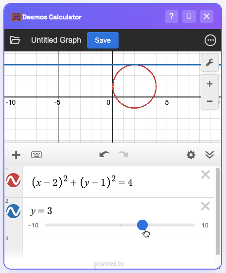

Visualization Hacks
Making abstract SAT algebra visible. Shift, shade, and solve with your eyes.
🎚️ Trick #3: The Slider Trick
Problem: Function \(g(x) = (x-2)^2 + k\) passes through (0, 5). Find \(k\).
📝 SAT Problem
Function \(g(x) = (x-2)^2 + k\) passes through the point (0, 5). Find the value of \(k\).
Step 1: Enter Function & Add Slider
Type g(x) = (x-2)^2 + k. Desmos will ask to add a slider.
Click the blue "k" button.
Step 2: Slide to Find Match
Move the slider. As k changes, the parabola shifts up and down.
Step 3: Lock in the Value
Adjust until the graph passes through exactly (0, 5).

The slider value is 1.
✅ Final Answer:
1
🗺️ Trick #6: Inequality Mapping
The Move: Type inequalities directly to see the shaded region.
📝 SAT Problem
The solution to the system y > 2x + 1 and y < -x + 5 contains points in every quadrant EXCEPT:
Step 1: Graph Inequalities for Digital SAT Mapping Trick
Type both equations into Desmos. Look for the overlapping shaded region (usually purple or darker color).

Step 2: Check Quadrants
The shaded region exists in Top-Right (I), Top-Left (II), and Bottom-Left (III).
It never crosses into the Bottom-Right (IV).
✅ Final Answer:
Quadrant IV (Choice D)
📝 SAT Problem
Find the value of \(c\) such that the line \(y = c\) is tangent to the circle \((x-2)^2 + (y-1)^2 = 4\).
Step 1: Graph & Solve Circle Tangency via Desmos Sliders
Graph the circle `(x-2)^2 + (y-1)^2 = 4` and the line `y = c`. Add a slider for `c`.

Step 2: Find Tangency
Slide `c` until the line just touches the top of the circle.
The line is tangent at y = 3.
✅ Final Answer:
3 (Choice B)
🌀 Trick #8: Parametric Circle
Draws a unit circle. Change range of `t` to draw arcs or sectors visually.
❄️ Trick #9: Polar Mode
Simplest way to graph a circle of radius 3 centered at (0,0). Just type r=3.
🌤️ Trick #10: Implicit Shading
Shades the INTERIOR of a circle. Great for point-in-circle problems.
👆 Trick #11: The Gray Dot
The Move: Click ANY intersection.
If you graph two lines, just click the gray dot. It gives the exact (x, y) coordinates. Never estimate.
🔍 Trick #12: Zoom Fit
The Move: Click the Wrench icon.
If you can't see the graph (e.g., y=500x), just click "Zoom Fit" (if available) or manually set axis to -100 to 1000.
🍰 Trick #13: Trig Grid
The Move: Change Step to "pi".
In settings (Wrench), change x-axis Step to `pi`. Now your grid lines are at π, 2π, etc. Essential for Trig graphs.
📈 Trick #14: Connect Points
The Move: Long-press the circle icon next to a table.
Turn on "Lines". Useful for visualizing polygons on the coordinate plane.
📐 Mastered Geometry Hacks?
Take on our elite geometry and circle theorem challenges.
Hardest Geometry Questions
Visualized every slider? Now solve the complex circle & trig problems students usually skip.
Try Hardest Geometry →